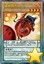
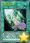

以下是可以在122.0.65.73 23333端口使用的先行卡的列表。下载补丁后即可使用。
使用方法：原版游戏下载补丁后解压至游戏文件夹，手机党请自定义数据库（方法请查看压缩包内使用说明），暂不支持游侠版游戏，静水版游戏无需使用。
资料来源：任天堂世界论坛，@Solari_28。
脚本作者：YGOPRO，ygohack137，SalvationDevelopment，Ygopro.co，Eerie Code，以及其他公开发布的先行卡脚本的作者。
星星图标是Yusuke Kamiyamane的作品。
数据整理：Loki。
提示：电脑上安装本次补丁前，请先删除expansions文件夹，否则会出现卡片重复的现象。
更新记录
- 2016-02-11 13:52
- 修复：辉神鸟 贝努鸟攻击力应为2800。
- 2016-02-11 13:46
- 新卡：温火鸡、鬼牛肉、鬼签。脚本来自nekrozar。DF16全卡已更新。
- 修复：原初的叫唤无法发动的问题。
- 2016-02-11 00:26
- 新卡：辉神鸟 贝努鸟、原初的叫唤、娱乐伙伴 手艺魔术家、娱乐伙伴戏剧剧场。辉神鸟 贝努鸟、原初的叫唤脚本来自Eerie Code。
- 更新：删除已经正式更新的卡。
- 2016-02-06 14:22
- 新卡：创世之龙骑士。脚本来自Eerie Code。
- 修复：破灭龙 甘多拉X生命值减半效果在准备阶段也会发动的问题。
- 修复：弧光勇烈龙和巨神龙 闪耀不增加守备力的问题。
- 2016-01-23 21:17
- 修复：弧光勇烈龙墓地效果不取对象的问题。
- 2016-01-23 19:34
- 更新：删除已经正式更新的卡。
- 更新：优化弧光勇烈龙和巨龙衍生物卡图。
- 2016-01-21 14:18
- 更新：一批卡图。
- 修复：仁王立效果未在结束阶段重置的问题。
- 修复：大怪兽的休眠中断发动后可以不进入战斗阶段的问题。
- 2016-01-18 20:12
- 新卡：弧光勇烈龙。
- 修复：巨龙之守护骑士未被识别为「守护者」卡的问题。
- 2016-01-17 22:19
- 修复：月光红狐不能对应突破技能等墓地效果的问题。
- 2016-01-17 22:15
- 修复：巨神龙 闪耀场合不能发动的问题。
- 修复：仁王立墓地效果对里侧表示怪兽无效的问题。
- 2016-01-15 22:54
- 修复：无形噬体感染被破坏检索效果仍有效的问题。
- 2016-01-14 20:52
- 新卡：巨龙之守护骑士。
- 修复：补全漏掉的TCG907卡表。
- 2016-01-14 10:29
- 修复：月光白兔返回手卡卡片数量没有计算灵摆区卡片的问题。
- 2016-01-12 23:20
- 修复：月光狼能融合召唤墓地融合怪兽的问题。
- 2016-01-12 10:55
- 修复：月光红狐能对应里侧表示的月光怪兽发动效果的问题。
- 2016-01-12 00:35
- 修复：无形噬体感染不增加攻击力守备力的问题。
- 2016-01-11 14:38
- 修复：月光红狐效果强制发动的问题。
- 2016-01-11 13:35
- 修复：22333端口月光等融合怪兽无法融合的问题。
- 2016-01-11 01:41
- 修复：暗黑骑士 盖亚王未被标记为「暗黑骑士 盖亚」怪兽的问题。
- 修复：复活之福音提示文本错误的问题。
- 2016-01-11 00:33
- 修复：青色眼睛的祭司回收效果不处理的问题。
- 2016-01-10 22:50
- 新卡：月光红狐。
- 更新：908全卡更新清晰卡图，更换为正式密码，修正及更新一些脚本。
- 2016-01-09 11:24
- 修复：浮幽樱发动次数无限制的问题。
- 修复：真龙的觉醒不能被神之警告的问题。
- 修复：无形阵·假面可以使用等级合计大于8的怪兽的问题。
- 修复：多张无形噬体溶解可多次发动2效果的问题。
- 2016-01-08 18:18
- 修复：青眼精灵龙等卡文本出现问号的问题。需重新下载补丁。
- 2016-01-08 16:09
- 修复：无形阵·假面无法抽卡的问题。
- 2016-01-08 00:54
- 新卡：22张新卡，908全卡已更新！
- 修复：迪隆的铁骑兵无法发动到灵摆区的问题。
- 修复：月光轮回舞踊场合无法发动的问题。
- 2016-01-03 11:28
- 修复：光之灵堂2效果在效果处理时被破坏仍有效的问题。
- 2016-01-02 23:57
- 修复：仁王立只能选择守备表示怪兽的问题，以及回合结束时攻击力变0效果开连锁的问题。
- 修复：复活之福音能代替灵摆区域卡的破坏的问题。
- 2016-01-01 22:45
- 新卡：修禅僧 元道、龙大神、TCG907大怪兽新卡3张。
- 修复：水晶翼同调龙未能破坏怪兽也加攻击力的问题。
- 修复：青色眼睛的贤士可以检索1星以外怪兽的问题。
卡片列表
| 卡图 | 卡名 | 效果 |
|---|---|---|
 | 邪神官 契伦·沙巴 | [怪兽|效果] 爬虫类/暗 [★8] 2500/0 「邪神官 契伦·沙巴」的②的效果1回合只能使用1次。 ①：自己手卡是5张以上的场合，这张卡可以不用解放作召唤。 ②：这张卡被战斗破坏送去墓地时才能发动。这张卡从墓地守备表示特殊召唤。这个效果特殊召唤的这张卡当作调整使用。 |
 | 银河蠕虫 | [怪兽|效果] 昆虫/光 [★3] 1200/1000 ①：这张卡召唤成功时，自己场上没有这张卡以外的怪兽存在的场合才能发动。从卡组把1只3星以下的「银河」效果怪兽特殊召唤。这个效果特殊召唤的怪兽的效果无效化。 |
 | 破灭龙 甘多拉X | [怪兽|效果] 龙/暗 [★8] 0/0 ①：这张卡从手卡的召唤·特殊召唤成功时才能发动。这张卡以外的场上的怪兽全部破坏，给与对方破坏的怪兽之内攻击力最高的怪兽的攻击力数值的伤害。这张卡的攻击力变成和这个效果给与对方的伤害相同数值。 ②：自己结束阶段发动。自己基本分变成一半。 |
 | 暗黑骑士 盖亚王 | [怪兽|效果] 战士/地 [★7] 2300/2100 ①：对方场上有怪兽存在，自己场上没有怪兽存在的场合，这张卡可以从手卡特殊召唤。 ②：1回合1次，比这张卡攻击力高的怪兽在对方场上特殊召唤的场合才能发动。这张卡的攻击力直到回合结束时上升700。 |
 | 柠檬魔术少女 | [怪兽|效果] 魔法师/光 [★2] 800/600 ①：1回合1次，把「柠檬魔术少女」以外的自己场上1只「魔术少女」怪兽解放才能发动。从卡组把1只魔法师族怪兽加入手卡。 ②：1回合1次，这张卡被选择作为攻击对象的场合才能发动。从手卡把1只魔法师族怪兽效果无效特殊召唤。那之后，攻击对象转移为那只怪兽，攻击怪兽的攻击力变成一半。 |
 | 精灵圣剑士 | [怪兽|效果] 战士/地 [★4] 2100/700 这张卡在规则上也当作「精灵剑士」卡使用。 ①：自己手卡是1张以上的场合，这张卡不能攻击。 ②：1回合1次，自己主要阶段才能发动。从手卡把1只「精灵剑士」怪兽特殊召唤。 ③：这张卡的攻击给与对方战斗伤害时才能发动。自己从卡组抽出自己场上的「精灵剑士」怪兽的数量。 |
 | 古生物 林乔利虫 | [陷阱] ①：以除外的1张自己或者对方的卡为对象才能发动。那张卡回到墓地。 ②：场上的陷阱卡发动时，连锁那个发动这个效果才能从墓地发动。这张卡变成通常怪兽（水族·水·2星·攻1200/守0）在怪兽区域特殊召唤（不当作陷阱卡使用）。这个效果特殊召唤的这张卡不受怪兽的效果影响，从场上离开的场合除外。 |
 | 古生物 伊尔东钵 | [陷阱] ①：以场上1只表侧表示怪兽为对象才能发动。那只怪兽的攻击力·守备力直到回合结束时上升500。 ②：场上的陷阱卡发动时，连锁那个发动这个效果才能从墓地发动。这张卡变成通常怪兽（水族·水·2星·攻1200/守0）在怪兽区域特殊召唤（不当作陷阱卡使用）。这个效果特殊召唤的这张卡不受怪兽的效果影响，从场上离开的场合除外。 |
 | 古生物 皮卡虫 | [陷阱] ①：从手卡丢弃1张「古生物」卡。那之后，自己从卡组抽2张。 ②：场上的陷阱卡发动时，连锁那个发动这个效果才能从墓地发动。这张卡变成通常怪兽（水族·水·2星·攻1200/守0）在怪兽区域特殊召唤（不当作陷阱卡使用）。这个效果特殊召唤的这张卡不受怪兽的效果影响，从场上离开的场合除外。 |
 | 古生物 拟油栉虫 | [陷阱] ①：以场上1张魔法·陷阱卡为对象才能发动。那张卡破坏。 ②：场上的陷阱卡发动时，连锁那个发动这个效果才能从墓地发动。这张卡变成通常怪兽（水族·水·2星·攻1200/守0）在怪兽区域特殊召唤（不当作陷阱卡使用）。这个效果特殊召唤的这张卡不受怪兽的效果影响，从场上离开的场合除外。 |
 | 古生物 欧巴宾海蝎 | [怪兽|效果|超量] 水/水 [☆2] 0/2400 2星怪兽×2 「古生物 欧巴宾海蝎」的③的效果1回合只能使用1次。 ①：这张卡不受其他怪兽的效果影响。 ②：只要这张卡在怪兽区域存在，自己的「古生物」陷阱卡的发动从手卡也能用。 ③：这张卡有陷阱卡在作为超量素材的场合，把这张卡1个超量素材取除才能发动。从卡组把1张「古生物」陷阱卡加入手卡。 |
 | 古生物 足杯虫 | [陷阱] ①：以场上1张表侧表示的卡为对象才能发动。丢弃1张手卡，作为对象的卡除外。 ②：场上的陷阱卡发动时，连锁那个发动这个效果才能从墓地发动。这张卡变成通常怪兽（水族·水·2星·攻1200/守0）在怪兽区域特殊召唤（不当作陷阱卡使用）。这个效果特殊召唤的这张卡不受怪兽的效果影响，从场上离开的场合除外。 |
 | 古生物 奇虾 | [怪兽|效果|超量] 水/水 [☆2] 2400/0 2星怪兽×3只以上 ①：这张卡不受其他怪兽的效果影响。 ②：1回合1次，自己的魔法与陷阱区域的陷阱卡被送去墓地的场合才能发动。自己卡组最上面的卡翻开，那是陷阱卡的场合，加入手卡。不是的场合，送去墓地。 ③：这张卡有陷阱卡在作为超量素材的场合，1回合1次，把这张卡1个超量素材取除，以场上1张卡为对象才能发动。那张卡破坏。这个效果在对方回合也能发动。 |
 | 古生物 怪诞虫 | [陷阱] ①：以场上1只表侧表示怪兽为对象才能发动。那只怪兽的攻击力·守备力直到回合结束时变成一半。 ②：场上的陷阱卡发动时，连锁那个发动这个效果才能从墓地发动。这张卡变成通常怪兽（水族·水·2星·攻1200/守0）在怪兽区域特殊召唤（不当作陷阱卡使用）。这个效果特殊召唤的这张卡不受怪兽的效果影响，从场上离开的场合除外。 |
 | 古生物 马尔三叶形虫 | [陷阱] ①：从卡组把1张陷阱卡送去墓地。 ②：场上的陷阱卡发动时，连锁那个发动这个效果才能从墓地发动。这张卡变成通常怪兽（水族·水·2星·攻1200/守0）在怪兽区域特殊召唤（不当作陷阱卡使用）。这个效果特殊召唤的这张卡不受怪兽的效果影响，从场上离开的场合除外。 |
 | 古生物 加拿大虫 | [陷阱] ①：以对方场上1只表侧表示怪兽为对象才能发动。那只怪兽变成里侧守备表示。 ②：场上的陷阱卡发动时，连锁那个发动这个效果才能从墓地发动。这张卡变成通常怪兽（水族·水·2星·攻1200/守0）在怪兽区域特殊召唤（不当作陷阱卡使用）。这个效果特殊召唤的这张卡不受怪兽的效果影响，从场上离开的场合除外。 |
 | 创世之龙骑士 | [怪兽|效果] 龙/光 [★4] 1800/600 「创世之龙骑士」的③的效果1回合只能使用1次。 ①：只要这张卡在怪兽区域存在，这张卡的等级在对方回合内上升4星。 ②：这张卡战斗破坏对方怪兽送去墓地时才能发动。从卡组把1只7·8星的龙族怪兽送去墓地。 ③：把1张手卡送去墓地，以自己墓地1只7·8星的龙族怪兽为对象才能发动。这张卡送去墓地，作为对象的怪兽特殊召唤。 |
|  | 温火鸡 | [怪兽|通常|灵摆] 鸟兽/炎 [★4] 1000/2000 7/7 ←7 【灵摆】 7→ ①：1回合1次，自己主要阶段才能发动。掷1次骰子。直到回合结束时，这张卡的灵摆刻度下降出现的数目数值（最少到1）。 【怪兽描述】 对保龄球的热情烤焦全身的狂放火鸡。为了拿到全中而锻炼出来的身体，经常散发出极品的香味。以还没见到的火鸡球作为目标，每天不间断地练习着。 |
| 鬼牛肉 | [怪兽|通常|灵摆] 兽/暗 [★7] 2000/1000 4/4 ←4 【灵摆】 4→ ①：1回合1次，自己主要阶段才能发动。掷1次骰子。直到回合结束时，这张卡的灵摆刻度上升出现的数目数值（最多到10）。 【怪兽描述】 属于美食家的牛类幽灵。对最爱吃的烤牛肉特别着迷，今天也是为与新味道相遇而一边满怀喜悦一边游荡于现世。 | |
|  | 原初的叫唤 | [魔法|仪式] 「辉神鸟 贝努鸟」的降临必需。 ①：从自己的手卡·场上把等级合计直到8以上的怪兽解放，从手卡把「辉神鸟 贝努鸟」仪式召唤。 ②：自己结束阶段把墓地的这张卡除外，以这个回合从场上送去墓地的自己墓地1只仪式怪兽为对象才能发动。那只怪兽特殊召唤。 |
| 鬼签 | [陷阱|永续] ①：自己准备阶段把这个效果发动。对方宣言卡的种类（怪兽·魔法·陷阱）。自己卡组最上面的卡翻开，翻开的卡是宣言的种类的卡的场合，对方从卡组抽1张。不是的场合，对方手卡随机选1张丢弃。翻开的卡回到卡组最下面。 | |
| 辉神鸟 贝努鸟 | [怪兽|效果|仪式] 天使/光 [★8] 2800/2000 「原初的叫唤」降临。 ①：1回合1次，把手卡1只怪兽给对方观看，以场上1只表侧表示怪兽为对象才能发动。这个回合，作为对象的怪兽的等级变成和给人观看的怪兽相同。 ②：1回合1次，这张卡以外的自己的手卡·场上的怪兽被解放的场合，以自己墓地1只怪兽为对象才能发动。那只怪兽加入手卡。 | |
 | 娱乐伙伴 手艺魔术家 | [怪兽|效果] 魔法师/光 [★7] 2500/2000 ①：这张卡可以把灵摆怪兽以外的自己场上1只「娱乐伙伴」怪兽解放从手卡特殊召唤。 ②：1回合1次，丢弃1张手卡，以场上1张表侧表示的卡为对象才能发动。那张卡破坏。 |
 | 娱乐伙伴戏剧剧场 | [魔法|场地] ①：自己场上的怪兽的攻击力上升自己场上的怪兽的种族种类×200。 ②：1回合1次，自己场上的「娱乐伙伴」怪兽的种族是4种类的场合才能发动。从自己的手卡·卡组·墓地选1只「异色眼」怪兽特殊召唤。 |